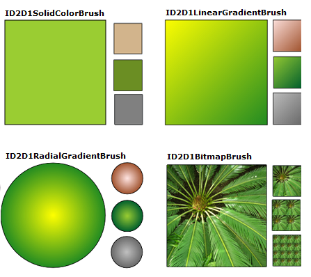
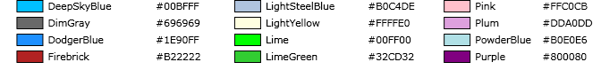
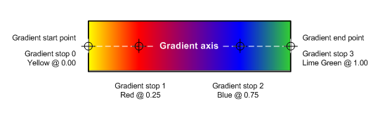
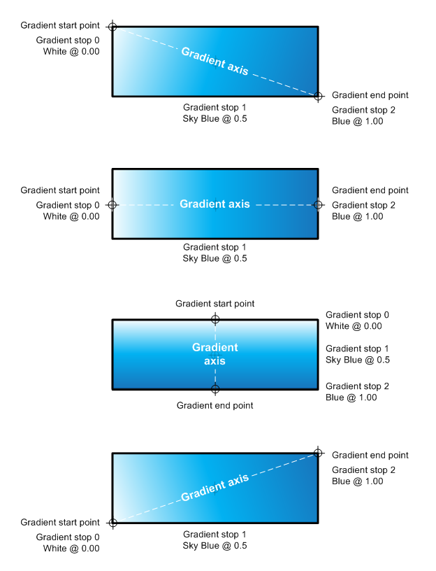
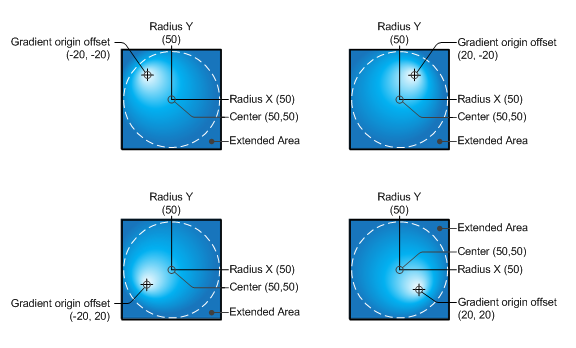
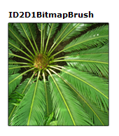
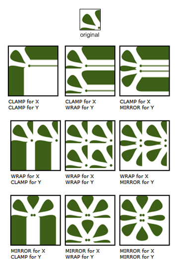
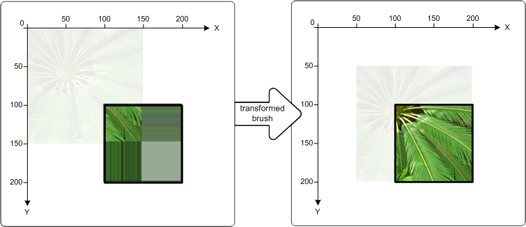

This overview describes how to create and use ID2D1SolidColorBrush, ID2D1LinearGradientBrush, ID2D1RadialGradientBrush, and ID2D1BitmapBrush objects to paint areas with solid colors, gradients, and bitmaps. It contains the following sections.
This overview assumes that you are familiar with the structure of a basic Direct2D application, as described in Create a simple Direct2D application.
A brush "paints" an area with its output. Different brushes have different types of output. Direct2D provides four brush types: ID2D1SolidColorBrush paints an area with a solid color, ID2D1LinearGradientBrush with a linear gradient, ID2D1RadialGradientBrush with a radial gradient, and ID2D1BitmapBrush with a bitmap.
[!NOTE]
Starting with Windows 8, you can also use ID2D1ImageBrush, which is similar to a bitmap brush, but you can use primitives, too.
All brushes inherit from ID2D1Brush and share a set of common features (setting and getting opacity, and transforming brushes); they are created by ID2D1RenderTarget and are device-dependent resources: your application should create brushes after it initializes the render target with which the brushes will be used, and recreate the brushes whenever the render target needs recreated. (For more information about resources, see Resources Overview.)
The following illustration shows examples of each of the different brush types.

Before you paint with an ID2D1SolidColorBrush or a gradient brush, you need to choose colors. In Direct2D, colors are represented by the D2D1_COLOR_F structure (which is actually just a new name for the structure that is used by Direct3D, D3DCOLORVALUE).
Prior to Windows 8, D2D1_COLOR_F uses sRGB encoding. sRGB encoding divides colors into four components: red, green, blue, and alpha. Each component is represented by a floating point value with a normal range of 0.0 to 1.0. A value of 0.0 indicates the complete absence of that color, while a value of 1.0 indicates that the color is fully present. For the alpha component, 0.0 represents a fully transparent color and 1.0 represents a fully opaque color.
Starting in Windows 8, D2D1_COLOR_F also accepts scRGB encoding. scRGB is a superset of that allows color values above 1.0 and below 0.0.
To define a color, you can use the D2D1_COLOR_F structure and initialize its fields yourself, or you can use the D2D1::ColorF class to help you create the color. The ColorF class provides several constructors for defining colors. If the alpha value is not specified in the constructors, it defaults to 1.0.
Use the ColorF(Enum, FLOAT) constructor to specify a predefined color and an alpha channel value. An alpha channel value ranges from 0.0 to 1.0, where 0.0 represents a fully transparent color and 1.0 represents a fully opaque color. The following illustration shows several predefined colors and their hexadecimal equivalents. For a complete list of predefined colors, see the Color constants section of the ColorF class.

The following example creates a predefined color and uses it to specify the color of an ID2D1SolidColorBrush.
hr = m_pRenderTarget->CreateSolidColorBrush(
D2D1::ColorF(D2D1::ColorF::Black, 1.0f),
&m_pBlackBrush
);
Use the ColorF(FLOAT, FLOAT, FLOAT, FLOAT) constructor to specify a color in the sequence of a red, green, blue, and alpha, where each element has a value between 0.0 and 1.0.
The following example specifies the red, green, blue, and alpha values for a color.
ID2D1SolidColorBrush *pGridBrush = NULL;
hr = pCompatibleRenderTarget->CreateSolidColorBrush(
D2D1::ColorF(D2D1::ColorF(0.93f, 0.94f, 0.96f, 1.0f)),
&pGridBrush
);
hr = m_pRenderTarget->CreateSolidColorBrush(
D2D1::ColorF(D2D1::ColorF(0x9ACD32, 1.0f)),
&m_pYellowGreenBrush
);
Regardless of the alpha mode of the render target with which you use a brush, D2D1_COLOR_F values are always interpreted as straight alpha.
To create a solid color brush, call the ID2D1RenderTarget::CreateSolidColorBrush method, which returns an HRESULT and an ID2D1SolidColorBrush object. The following illustration shows a square that is stroked with a black color brush and painted with a solid color brush that has the color value of 0x9ACD32.
The following code shows how to create and use a black color brush and a brush with a color value of 0x9ACD32 to fill and draw this square.
ID2D1SolidColorBrush *m_pBlackBrush;
ID2D1SolidColorBrush *m_pYellowGreenBrush;
if (SUCCEEDED(hr))
{
hr = m_pRenderTarget->CreateSolidColorBrush(
D2D1::ColorF(D2D1::ColorF::Black, 1.0f),
&m_pBlackBrush
);
}
// Create a solid color brush with its rgb value 0x9ACD32.
if (SUCCEEDED(hr))
{
hr = m_pRenderTarget->CreateSolidColorBrush(
D2D1::ColorF(D2D1::ColorF(0x9ACD32, 1.0f)),
&m_pYellowGreenBrush
);
}
m_pRenderTarget->FillRectangle(&rcBrushRect, m_pYellowGreenBrush);
m_pRenderTarget->DrawRectangle(&rcBrushRect, m_pBlackBrush, 1, NULL);
Unlike other brushes, creating an ID2D1SolidColorBrush is a relatively inexpensive operation. You may create ID2D1SolidColorBrush objects each time you render with little to no performance impact. This approach is not recommended for gradient or bitmap brushes.
An ID2D1LinearGradientBrush paints an area with a linear gradient defined along a line, the gradient axis. You specify the gradient's colors and their location along the gradient axis using ID2D1GradientStop objects. You may also modify the gradient axis, which enables you to create horizontal and vertical gradient and to reverse the gradient direction. To create a linear gradient brush, call the ID2D1RenderTarget::CreateLinearGradientBrush method.
The following illustration shows a square that is painted with an ID2D1LinearGradientBrush that has two predefined colors, "Yellow" and "ForestGreen".

To create the gradient shown in the preceding illustration, complete these steps:
Declare two D2D1_GRADIENT_STOP objects. Each gradient stop specifies a color and a position. A position of 0.0 indicates the beginning of the gradient, while a position of 1.0 indicates the end of the gradient.
The following code creates an array of two D2D1_GRADIENT_STOP objects. The first stop specifies the color "Yellow" at a position 0, and the second stop specifies the color "ForestGreen" at position 1.
// Create an array of gradient stops to put in the gradient stop
// collection that will be used in the gradient brush.
ID2D1GradientStopCollection *pGradientStops = NULL;
D2D1_GRADIENT_STOP gradientStops[2];
gradientStops[0].color = D2D1::ColorF(D2D1::ColorF::Yellow, 1);
gradientStops[0].position = 0.0f;
gradientStops[1].color = D2D1::ColorF(D2D1::ColorF::ForestGreen, 1);
gradientStops[1].position = 1.0f;
// Create the ID2D1GradientStopCollection from a previously
// declared array of D2D1_GRADIENT_STOP structs.
hr = m_pRenderTarget->CreateGradientStopCollection(
gradientStops,
2,
D2D1_GAMMA_2_2,
D2D1_EXTEND_MODE_CLAMP,
&pGradientStops
);
// The line that determines the direction of the gradient starts at
// the upper-left corner of the square and ends at the lower-right corner.
if (SUCCEEDED(hr))
{
hr = m_pRenderTarget->CreateLinearGradientBrush(
D2D1::LinearGradientBrushProperties(
D2D1::Point2F(0, 0),
D2D1::Point2F(150, 150)),
pGradientStops,
&m_pLinearGradientBrush
);
}
m_pRenderTarget->FillRectangle(&rcBrushRect, m_pLinearGradientBrush);
The D2D1_GRADIENT_STOP is the basic building block of a gradient brush. A gradient stop specifies the color and the position along the gradient axis. The value of the gradient position ranges between 0.0 and 1.0. The closer it is to 0.0, the closer the color is to the start of the gradient; the closer it is to 1.0, the closer the color is to the end of the gradient.
The following illustration highlights the gradient stops. The circle marks the position of gradient stops and a dashed line shows the gradient axis.

The first gradient stop specifies the color yellow at a position of 0.0. The second gradient stop specifies red color at a position of 0.25. From left to right along the gradient axis, the colors between these two stops gradually change from yellow to red. The third gradient stop specifies blue color at a position of 0.75. The colors between the second and third gradient stops gradually change from red to blue. The fourth gradient stop specifies lime green at a position of 1.0. The colors between the third and fourth gradient stops gradually change from blue to lime green.
As mentioned previously, gradient stops of a linear gradient brush are positioned along a line, the gradient axis. You can specify the orientation and size of the line using the startPoint and endPoint fields of the D2D1_LINEAR_GRADIENT_BRUSH_PROPERTIES structure when you create a linear gradient brush. After you've created a brush, you can adjust the gradient axis by calling the brush's SetStartPoint and SetEndPoint methods. By manipulating the brush's start point and end point, you can create horizontal and vertical gradients, reverse the gradient direction, and more.
For example, in the following illustration, the start point is set to (0,0) and the end point to (150, 50); this creates a diagonal gradient that starts at the upper-left corner and extends to the lower-right corner of the area being painted. When you set the start point to (0, 25) and the end point to (150, 25), a horizontal gradient is created. Similarly, setting the start point to (75, 0) and the end point to (75, 50) creates a vertical gradient. Setting the start point to (0, 50) and the end point to (150, 0) creates a diagonal gradient that starts at the lower-left corner and extends to the upper-right corner of the area being painted.

Unlike an ID2D1LinearGradientBrush, which blends two or more colors along a gradient axis, an ID2D1RadialGradientBrush paints an area with a radial gradient that blends two or more colors across an ellipse. While a ID2D1LinearGradientBrush defines its gradient axis with a start point and an end point, a ID2D1RadialGradientBrush defines its gradient ellipse by specifying a center, horizontal and vertical radii, and a gradient origin offset.
Like an ID2D1LinearGradientBrush, an ID2D1RadialGradientBrush uses an ID2D1GradientStopCollection to specify the colors and positions in the gradient.
The following illustration shows a circle painted with an ID2D1RadialGradientBrush. The circle has two gradient stops: the first specifies a predefined color "Yellow" at a position of 0.0, and the second specifies a predefined color "ForestGreen" at a position of 1.0. The gradient has a center of (75, 75), a gradient origin offset of (0, 0), and an x- and y-radius of 75.

The following code examples shows how to paint this circle with an ID2D1RadialGradientBrush that has two color stops: "Yellow" at a position of 0.0, and "ForestGreen" at a position of 1.0. Similar to creating an ID2D1LinearGradientBrush, the example calls CreateGradientStopCollection to create an ID2D1GradientStopCollection from an array of gradient stops.
// Create an array of gradient stops to put in the gradient stop
// collection that will be used in the gradient brush.
ID2D1GradientStopCollection *pGradientStops = NULL;
D2D1_GRADIENT_STOP gradientStops[2];
gradientStops[0].color = D2D1::ColorF(D2D1::ColorF::Yellow, 1);
gradientStops[0].position = 0.0f;
gradientStops[1].color = D2D1::ColorF(D2D1::ColorF::ForestGreen, 1);
gradientStops[1].position = 1.0f;
// Create the ID2D1GradientStopCollection from a previously
// declared array of D2D1_GRADIENT_STOP structs.
hr = m_pRenderTarget->CreateGradientStopCollection(
gradientStops,
2,
D2D1_GAMMA_2_2,
D2D1_EXTEND_MODE_CLAMP,
&pGradientStops
);
To create an ID2D1RadialGradientBrush, use the ID2D1RenderTarget::CreateRadialGradientBrush method. The CreateRadialGradientBrush takes three parameters. The first parameter, a D2D1_RADIAL_GRADIENT_BRUSH_PROPERTIES specifies the center, gradient origin offset, and the horizontal and vertical radii of the gradient. The second parameter is an ID2D1GradientStopCollection that describes the colors and their positions in the gradient, and the third parameter is the address of the pointer that receive the new ID2D1RadialGradientBrush reference. Some overloads take an additional parameter, a D2D1_BRUSH_PROPERTIES structure that specifies an opacity value and a transform to apply to the new brush.
The next example calls CreateRadialGradientBrush, passing in the array of gradient stops, and the radial gradient brush properties that have the center value set to (75, 75), the gradientOriginOffset set to (0, 0), and radiusX and radiusY both set to 75.
// The center of the gradient is in the center of the box.
// The gradient origin offset was set to zero(0, 0) or center in this case.
if (SUCCEEDED(hr))
{
hr = m_pRenderTarget->CreateRadialGradientBrush(
D2D1::RadialGradientBrushProperties(
D2D1::Point2F(75, 75),
D2D1::Point2F(0, 0),
75,
75),
pGradientStops,
&m_pRadialGradientBrush
);
}
The final example uses the brush to fill an ellipse.
m_pRenderTarget->FillEllipse(ellipse, m_pRadialGradientBrush);
m_pRenderTarget->DrawEllipse(ellipse, m_pBlackBrush, 1, NULL);
Different values for center, gradientOriginOffset, radiusX and/or radiusY produce different gradients. The following illustration shows several radial gradients that have different gradient origin offsets, creating the appearance of the light illuminating the circles from different angles.

An ID2D1BitmapBrush paints an area with a bitmap (represented by an ID2D1Bitmap object).
The following illustration shows a square painted with a bitmap of a plant.

The examples that follow shows how to paint this square with an ID2D1BitmapBrush.
The first example initializes an ID2D1Bitmap for use with the brush. The ID2D1Bitmap is provided by a helper method, LoadResourceBitmap, defined elsewhere in the sample.
// Create the bitmap to be used by the bitmap brush.
if (SUCCEEDED(hr))
{
hr = LoadResourceBitmap(
m_pRenderTarget,
m_pWICFactory,
L"FERN",
L"Image",
&m_pBitmap
);
}
To create the bitmap brush, call the ID2D1RenderTarget::CreateBitmapBrush method and specify the ID2D1Bitmap with which to paint. The method returns an HRESULT and an ID2D1BitmapBrush object. Some CreateBitmapBrush overloads enable you to specify additional options by accepting a D2D1_BRUSH_PROPERTIES and a D2D1_BITMAP_BRUSH_PROPERTIES structure.
if (SUCCEEDED(hr))
{
hr = m_pRenderTarget->CreateBitmapBrush(
m_pBitmap,
&m_pBitmapBrush
);
}
The next example uses the brush to fill a rectangle.
m_pRenderTarget->FillRectangle(&rcBrushRect, m_pBitmapBrush);
Sometimes, the gradient of a gradient brush or the bitmap for a bitmap brush doesn't completely fill the area being painted.
When this happens for an ID2D1BitmapBrush, Direct2D uses the brush's horizontal (SetExtendModeX) and vertical (SetExtendModeY) extend mode settings to determine how to fill the remaining area.
When this happens for a gradient brush, Direct2D determines how to fill the remaining area by using the value of the D2D1_EXTEND_MODE parameter that you specified when you called the CreateGradientStopCollection to create the gradient brush's ID2D1GradientStopCollection.
The following illustration shows the results from every possible combination of the extend modes for an ID2D1BitmapBrush: D2D1_EXTEND_MODE_CLAMP (CLAMP), D2D1_EXTEND_MODE_WRAP (WRAP), and D2D1_EXTEND_MIRROR (MIRROR).

The following example shows how to set the bitmap brush's x- and y-extend modes to D2D1_EXTEND_MIRROR. It then paints the rectangle with the ID2D1BitmapBrush.
m_pBitmapBrush->SetExtendModeX(D2D1_EXTEND_MODE_MIRROR);
m_pBitmapBrush->SetExtendModeY(D2D1_EXTEND_MODE_MIRROR);
m_pRenderTarget->FillRectangle(exampleRectangle, m_pBitmapBrush);
It produces output as shown in the following illustration.
When you paint with a brush, it paints in the coordinate space of the render target. Brushes do not automatically position themselves to align with the object being painted; by default, they begin painting at the origin (0, 0) of the render target.
You can "move" the gradient defined by an ID2D1LinearGradientBrush to a target area by setting its start point and end point. Likewise, you can move the gradient defined by an ID2D1RadialGradientBrush by changing its center and radii.
To align the content of an ID2D1BitmapBrush to the area being painted, you can use the SetTransform method to translate the bitmap to the desired location. This transform only affects the brush; it does not affect any other content drawn by the render target.
The following illustrations shows the effect of using an ID2D1BitmapBrush to fill a rectangle located at (100, 100). The illustration on the left illustration shows the result of filling the rectangle without transforming the brush: the bitmap is drawn at the render target's origin. As a result, only a portion of the bitmap appears in the rectangle. The illustration on the right shows the result of transforming the ID2D1BitmapBrush so that its content is shifted 50 pixels to the right and 50 pixels down. The bitmap now fills the rectangle.

The following code shows how to accomplish this. First apply a translation to the ID2D1BitmapBrush, moving the brush 50 pixels right along the x-axis and 50 pixels down along the y-axis. Then use the ID2D1BitmapBrush to fill the rectangle that has the upper-left corner at (100, 100) and the lower-right corner at (200, 200).
// Create the bitmap to be used by the bitmap brush.
if (SUCCEEDED(hr))
{
hr = LoadResourceBitmap(
m_pRenderTarget,
m_pWICFactory,
L"FERN",
L"Image",
&m_pBitmap
);
}
if (SUCCEEDED(hr))
{
hr = m_pRenderTarget->CreateBitmapBrush(
m_pBitmap,
&m_pBitmapBrush
);
}
D2D1_RECT_F rcTransformedBrushRect = D2D1::RectF(100, 100, 200, 200);
// Demonstrate the effect of transforming a bitmap brush.
m_pBitmapBrush->SetTransform(
D2D1::Matrix3x2F::Translation(D2D1::SizeF(50,50))
);
// To see the content of the rcTransformedBrushRect, comment
// out this statement.
m_pRenderTarget->FillRectangle(
&rcTransformedBrushRect,
m_pBitmapBrush
);
m_pRenderTarget->DrawRectangle(rcTransformedBrushRect, m_pBlackBrush, 1, NULL);